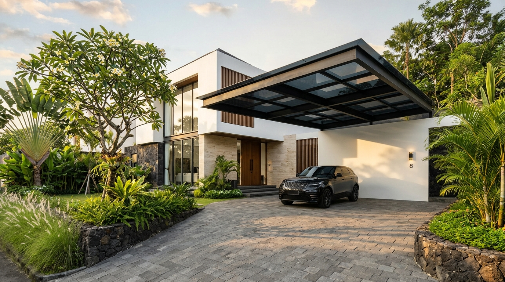

Rancang Kanopi Sesuai Halaman Rumah Anda.
Unggah foto halaman rumah Anda, pilih model kanopi favorit, jawab pertanyaan singkat yang interaktif, dan tandai lokasi Anda di Purwokerto untuk mendapatkan rekomendasi desain yang presisi.
6 Model
Kurasi Arsitektural
Instan
Preview Foto Halaman
Video
Siap Render Proyek

Kaca Smoked Tempered & Rangka Baja Hitam
Upload Foto Halaman & Pilih Model Kanopi
Unggah foto halaman depan, carport, atau teras rumah Anda langsung dari perangkat (aman & hanya diproses di browser Anda), lalu pasangkan dengan model kanopi pilihan.
Foto Halaman Rumah Anda
Format JPG, PNG, atau WEBP
Klik atau Seret Foto Halaman Rumah
Ambil foto tampak depan carport, teras, atau area halaman yang ingin dipasangi kanopi.
Pilih Foto dari Galeri / KameraPilihan Model Kanopi
Klik salah satu model untuk memasangkannya dengan foto halaman rumah Anda.
Temukan Spesifikasi Paling Pas
Jawab 4 pertanyaan singkat di bawah ini untuk melengkapi kebutuhan kanopi Anda, lalu lihat ringkasan konsultasi siap kirim.
Data Kontak & Halaman Rumah
Data Berhasil Dikirim!
Pertanyaan yang Sering Diajukan
Lokasi Rumah di Purwokerto & Banyumas
Pilih kecamatan lokasi rumah Anda untuk melihat rekomendasi struktur sesuai cuaca lokal, atau sertakan titik alamat Google Maps.
Foto Halaman Rumah & Pemasangan
Referensi proporsi kanopi pada halaman rumah di wilayah Purwokerto.
Galeri Video Purwokerto Kanopi
Etalase khusus untuk menampilkan video simulasi desain dan dokumentasi hasil pengerjaan kanopi. Video yang di-generate menyusul dapat langsung ditambahkan melalui file konfigurasi video.